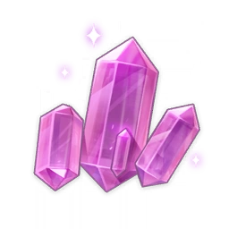

Daily routineRutina diaria
For when you're short on time.Para cuando tienes poco tiempo.
The bare minimum so your account doesn't fall behind. Haven't logged in for days? Oh well, it happened. Okay, let's start today: check off what you do and I'll keep count. Lo mínimo para que tu cuenta no se quede atrás. ¿Llevas días sin entrar? Ni modo, ya pasó. A ver, empezamos hoy: ve marcando lo que hagas y yo llevo la cuenta.
For when you're short on time.Para cuando tienes poco tiempo.

Battle Pass and weekly bosses.Pase de Batalla y jefes de la semana.
The game resets daily activities at 4:00 (server time) and weekly ones on Mondays at the same time. These lists reset themselves at 4:00 your local time, so there may be a small difference depending on your server. Your progress is saved in this browser. El juego reinicia las actividades diarias a las 4:00 (hora del servidor) y las semanales los lunes a esa misma hora. Estas listas se reinician solas a las 4:00 de tu hora local, así que puede haber una pequeña diferencia según tu servidor. Tu progreso se guarda en este navegador.